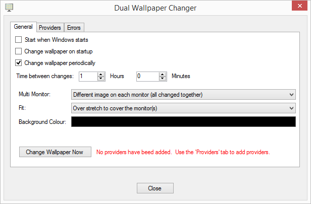
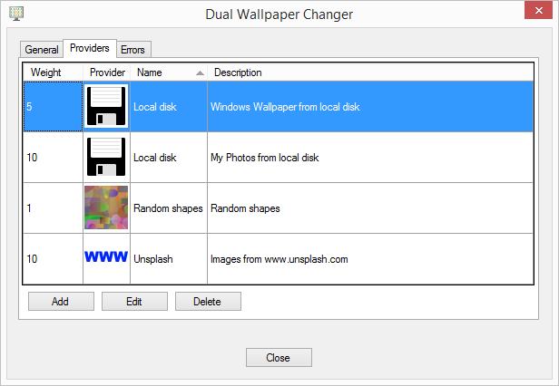

Dual Wallpaper Changer
Dual Wallpaper Changer will routinely change your wallpaper using a variety of sources for images.
It uses plugins so further image sources can easily be added.
Usage
When DualWallpaperChanger.exe is run it will look similar to the following.
The first few items allow you to specify when and how often you want the wallpaper changed.
'Multi Monitor' allows you to specify how multiple monitors should be treated. The available options are:
- One image stretched over all monitors.
- Same image on each monitor.
- Different image on each monitor (all changed together).
- Different image on each monitor (only one changed at a time). Initially this will update the image on all of the monitors, but after that whenever it is time to update the wallpaper, it will just update one monitor at a time in turn.
If the image size is not the same size as the rectangle enclosing all of the selected screens, then the 'Fit' combo box determines any scaling that need to be applied to the image. The available options are:
- Over stretch to cover the monitor(s).
- Under stretch so as not to clip image. This will result in bars being added.
- Center image without any stretching. If your image is larger than the selected monitors, then the image will be clipped. If The image is smaller than the selected monitors, then a border will be displayed around the image.
- Stretch image to fill monitor(s) - ignores aspect ratio. This will stretch or shrink so that the whole image is displayed occupying the whole area of the selected monitors.
Initially no providers (of images) are set up, so click on the 'Providers' tab to add/edit/delete providers.
The weight will indicate the frequency that provider should be used, with the higher the value, the more often it is used. So if you have one provider with a weight of 1 and another with a weight of 4, then you are 4 times as likely for an image to be chosen from the provider with a weight of 4 than from the provider with a weight of 1.
Three provider plugins are currently supported:
- Local disk - provides images saved in a folder (with an option to look in sub-folders) on an attached drive.
- Unspash - provides images from www.unsplash.com. Please see their terms and conditions on the use of these images and in particular please note that the usage is restricted to persons who are at least 18 years old.
- Random shapes - generates images composed of random shapes.
If you use a provider that takes images from an external source, please respect any terms and conditions they may have.
Troubleshooting
If when you try to add a new provider, the list is empty, then make sure that the following files:
- DWC_Library.dll
- DWC_LocalDisk.dll
- DWC_RandomShapes.dll
- DWC_Unsplash.dll
all exist in the same directory that DualWallpaperChanger.exe is being run from. You also need to make sure that each of these files has been marked as safe to run. You can do this by right-clicking on each file in Windows Explorer, selecting "Properties" and if there is a message at the bottom of the window saying that the file may have come from another computer and might be blocked, then click on the "Unblock" button followed by the "OK" button.